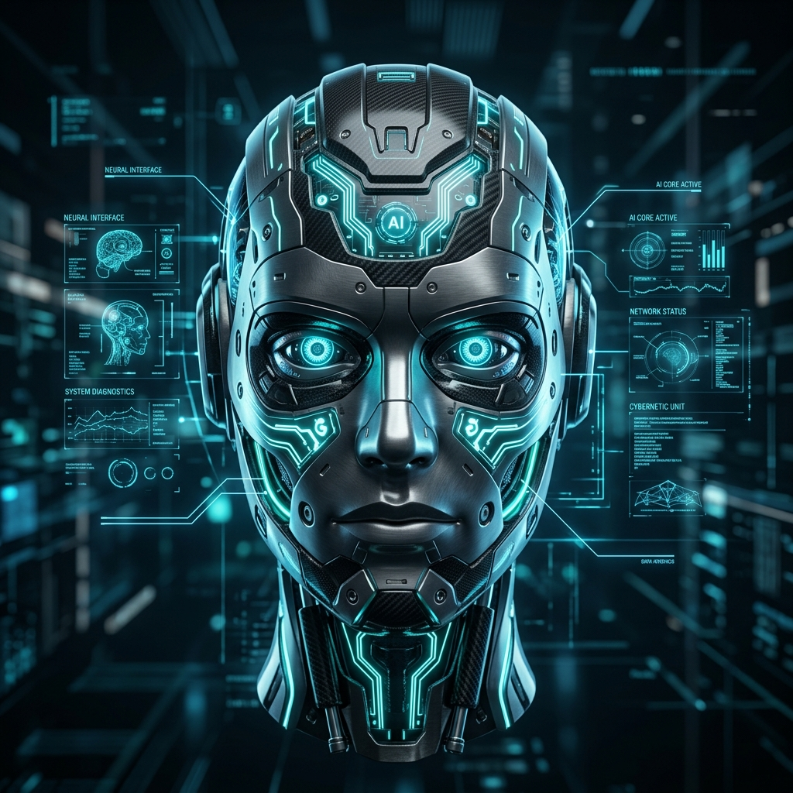

Detection and perception pipelines
Experience with OpenCV, MediaPipe, YOLOv8, TensorFlow, depth cameras, ArUco pose estimation, camera calibration, and dataset annotation using Roboflow.
AI and Robotics
AI and Robotics student building practical systems across computer vision, ROS 2, embedded sensing, deep learning, and Streamlit-based AI applications.

Profile
Experience with OpenCV, MediaPipe, YOLOv8, TensorFlow, depth cameras, ArUco pose estimation, camera calibration, and dataset annotation using Roboflow.
Built ESP32 and dual-IMU integrations, created URDF models, simulated motion in RViz, and explored forward kinematics, IK, ROS 2, and arm tracking workflows.
Developed Streamlit applications for AI proctoring, placement assistance, diet recommendation, blood donation management, and real-time air writing.
Internship Experience
Developed and tested autonomous navigation capabilities for TortoiseBot using ROS-based navigation frameworks. Implemented localization, mapping, path planning, and obstacle avoidance to enable the robot to navigate safely and efficiently in indoor environments.
Configured and calibrated depth cameras for 3D perception tasks, then built and annotated custom object detection datasets in Roboflow to support ML training pipelines.
Integrated IMU sensors with ESP32, assigned separate I2C addresses, built a double-link URDF model, and simulated arm movement in RViz using ROS 2.
Mounted IMUs at shoulder and elbow positions, calculated wrist coordinates through forward kinematics, and connected outputs into ROS 2 for motion visualization.
Detected ArUco markers, estimated marker pose, mapped pose outputs into IK-style joint commands, and researched replacing marker tracking with DenseFusion plus IMU fusion.
Projects
RAG-based placement assistant using Python and FAISS to provide resume suggestions, interview preparation guidance, and an interactive Streamlit experience.
Autonomous robot using microcontroller programming, sensor fusion, and PID tuning for real-time stability through iterative hardware testing.
Online exam monitoring with YOLOv8 mobile detection, MediaPipe facial analysis, face verification, multi-person detection, tab-switch tracking, and PDF reports.
Real-time gesture-controlled air writing system using OpenCV, MediaPipe, TensorFlow, and a CNN prediction pipeline with dynamic dataset expansion.
AI-powered meal planning tool that generates diet suggestions from user age, weight, height, and health goals through a clean Streamlit interface.
Python and Streamlit application for donor records, blood-group matching, and faster access to donation process information.
Technical Stack
Python, C++, microcontroller programming, data workflows, Streamlit apps.
PyTorch, TensorFlow, CNNs, machine learning, RAG, FAISS, transformers, embeddings.
OpenCV, MediaPipe, YOLOv8, ArUco detection, pose estimation, Roboflow.
ROS 2, RViz, URDF, ESP32, IMU sensors, depth cameras, embedded systems.
Contact
Interested in practical AI systems that connect perception, sensing, robotics, and useful software interfaces.